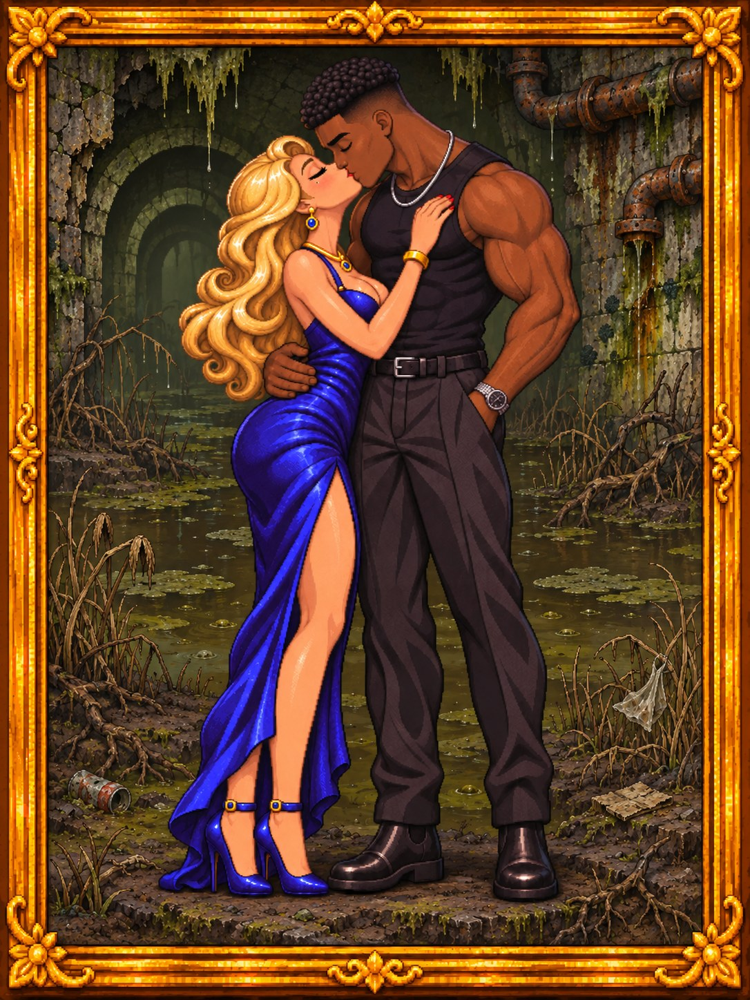
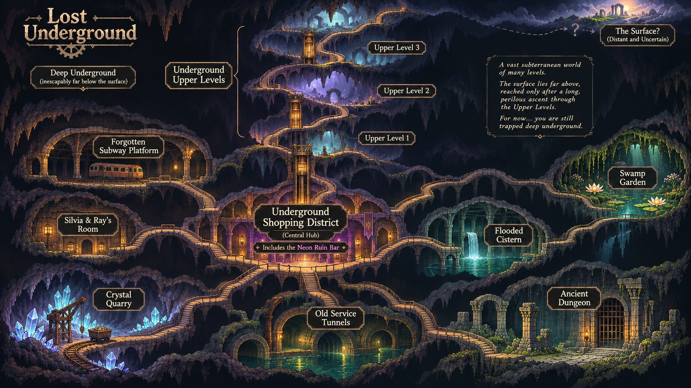
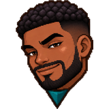

Lost Underground
Sylvia is lost in the ruins and dungeons below ground, in old cellars and underground bars. Her boyfriend Ray is wandering the bar with her. Walk around the bar with her and find the way out and up.



"We should get better photos taken when we're out of the swamps..." — RayTap or press Esc to put it back


How to play
Move Sylvia with A and D or the arrow keys to walk left and right, and W and S to walk her forward and back on the floor. Hold Space to walk faster. Click the mouse to attack, or press H. The map button at the top left, under the hearts, opens the world map with Sylvia's and Ray's heads pinned at where they are. Tap it or press Esc to close it. She turns away from you walking forward, and faces you walking back. You start in your chamber. Walk all the way to the right to go to the bar. Walk up to Vicky behind the bar and press T to talk. Press H to attack, Ray will run over and fight with you. Ray follows you when you get far away and wanders the bar when you are close. Walk all the way to the left edge of the bar and press E to enter your chamber. You walk in from the right side. In the chamber, walk all the way to the right again to go back to the bar. Walk up to the bed in the chamber and press E to sleep under the covers and recover HP. Ray climbs in with you. In the chamber, walk up to the framed photo on the nightstand beside the bed and press E and it pops up big, with the rest of the game blurred behind it. Tap it or press Esc to put it back. In the chamber, walk up to the makeup desk on the left wall and press E to look in the golden mirror. She blinks once in a while. Press M or tap Manifest and she shuts her eyes and says an affirmation, that her life is about to get better and she and Ray will get out of the sewers and live happily on land. Ray climbs out first and reaches back for her, and she climbs up to his hand. In the Shopping District, walk all the way to the left to climb back in the window. Walk up to the bar door with the beer mug and press E to go to the bar. Walk up to the repairs, clothing, Style Studio and arcade doors and press E to go inside. Walk all the way to the left inside a shop to come back out to the street. Walk up to Char, Mikey or Gunner in their shops and press T to talk to them. They stop, show their talking pose and say something. Press T again for another line, or walk away or press Esc to end the chat. In the arcade, walk up to Jamie, Kush or Lia and press T to talk to them too. They stop and say something, T for another line, Esc or walking away ends the chat. The arcade floor hides a secret. Walk over the three dark arches in the floor and press I to inspect, and they will jump down together to the Crystal Quarry. In the tunnels, walk all the way to the left to go back to the Crystal Quarry. The rusted iron door leads to the Ancient Dungeon. In the dungeon, walk all the way to the left to come back to the tunnels, or go through the tunnel on the far right to come up in the Flooded Cistern. Walk up to the stairs on the right side of the bar and press E to climb up to the Forgotten subway. Walk up to the stairs on the right side of the subway and press E to climb up to the garden. In the garden, walk all the way to the left to go to the Flooded Cistern. In the Shopping District, walk all the way to the right to go to the Flooded Cistern. In the Flooded Cistern, walk all the way to the right to go to the Swamp Garden, or all the way to the left to go back to the street. On touch, hold the left or right side of the bar to walk that way.
Meet Sylvia and Ray
Sylvia is the main character. Ray is a head taller than her and just wanders the bar while she finds the way out.
The bar
The bar under the ground, where Vicky pours drinks. The stairs on the right lead up to the Forgotten subway. Their chamber is through the far left edge.
The golden mirror
The makeup desk in the chamber, with a golden arched mirror. She looks in it, blinks, and when she manifests she shuts her eyes and says her life is about to get better, and she and Ray will get out and live happily on land.
The world map
A vast subterranean world of many levels, from the Crystal Quarry and the Old Service Tunnels below to the Upper Levels and the Surface far above. The map button at the top left, under the hearts, opens it with Sylvia's and Ray's heads pinned at their current room.
The photo on the nightstand
A framed photo of Sylvia and Ray kissing in the ruins, on the nightstand beside the bed. Walk right up to it and press E and it pops up big, with the rest of the game blurred behind it. Ray says they should get better photos taken when they are out of the swamps. Tap it or press Esc to put it back.
The Forgotten subway
An abandoned station up the stairs from the bar, with a rusty old train. The stairs on the right climb up to the garden.
The Garden
A lush underground garden, with waterfalls, a pond and a stone bridge. It sits to the right of the Flooded Cistern, and the subway stairs climb up to it too. The stairs on the right climb higher, toward the way out.
The Crystal Quarry
A deep crystal cave under the arcade, glowing purple and blue. It is hidden under the arcade floor, reached only by inspecting one of the dark arches and jumping down together. Walk all the way to the left to come back up to the arcade, or all the way to the right to go to the Old Service Tunnels.
The Old Service Tunnels
Damp old service tunnels past the quarry, with rusted pipes, dripping water and a locked iron door. Walk all the way to the left to go back to the Crystal Quarry. Go through the rusted iron door to reach the Ancient Dungeon.
The Ancient Dungeon
A dry, shadowy dungeon past the tunnels, with chained gates, broken cells and a great cracked stone door. Walk all the way to the left to go back to the Old Service Tunnels. Go through the tunnel on the far right to come up in the Flooded Cistern.
The Flooded Cistern
An ancient flooded waterworks under the ground, with a great waterwheel, rusted pipes and a stone walkway over dark water. It sits to the right of the Shopping District, and the Swamp Garden is past it to the right. The portal tunnel from the Ancient Dungeon comes up here too.
The Shopping District
A neon canal street under the ground, with a repairs shop, a clothing store, a style studio and an arcade. Climb out of the chamber window to get there. The bar door with the beer mug leads to the bar. Walk all the way to the right to reach the Flooded Cistern.
The shops
The repair shop, the clothing store, the Style Studio salon and the arcade all open off the Shopping District street. Walk up to a door and press E to go in, and walk all the way to the left inside to come back out.
The arcade kids
Three regulars who stay in the arcade, wandering between the machines: Jamie with her handheld game and yellow backpack, Kush with his dino plush, and Lia with her cup and varsity jacket. Walk up to one and press T to talk. Kush loves the underground but is curious about the land, Lia is just happy to have her friends and her snacks, and Jamie is very pessimistic about the whole thing and does not really care.
Char, the clothing store owner
Char runs the clothing store and only ever stands and walks in there. She wanders the racks, pausing to look at the clothes. A fashion diva with a fur coat and a cigar. Walk up to her and press T to talk.
Mikey, the salon owner
Mikey runs the Style Studio salon and only ever stands and walks in there. He wanders the chairs, pausing by the mirrors. Fun, loud and obsessed with hair. Walk up to him and press T to talk.
Gunner, the repair shop owner
Gunner runs the repair shop and only ever stands and walks in there. He wanders the workbench, pausing by the tools. Warm and handy, he keeps the whole district running. Walk up to him and press T to talk.
Beat your best
Your best score for Lost Underground is saved in this browser.